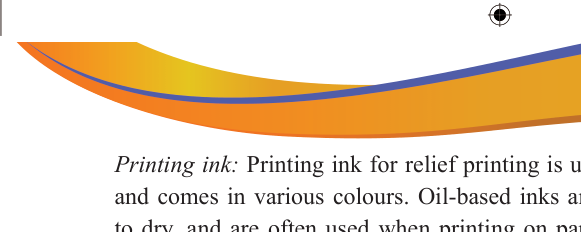

Printing ink: Printing ink for relief printing is usually oil-based or water-based and comes in various colours. Oil-based inks are more traditional, take longer to dry, and are often used when printing on paper. Water-based inks are more suitable for beginners, as they are easier to clean up and dry faster.
Printing paper: Specialised printmaking papers are used for relief printing. They are chosen for their ability to hold ink well and produce high-quality prints. The thickness and texture of the paper can influence the final appearance of the print.
Tools and equipment used in relief printing
Relief printing often shares most of the same tools and materials used by other printing techniques. Here are some of them:
Brayer: A brayer, also known as an ink roller, is used to apply ink evenly to the surface of the block. It ensures that the ink is distributed smoothly, hence, achieve consistent and clean prints.
Printing press: Using a printing press can provide even pressure and help achieve more consistent prints, especially when working with large editions.
Printing table: This is a flat and stable surface for inking and printing the blocks.
Baren: A handheld tool used to apply pressure when hand-printing relief prints, especially useful for small-scale works.
Protective gear: Relief printmaking can involve the use of sharp tools, so wearing gloves and eye protection is recommended to ensure safety during the carving process.
Steps in making relief prints
The following are the steps in relief prints:
Design creation: Use sketch paper to create an image of a design based on a specific given theme, the art teacher can select an attractive theme for you. For example, it can be a symbol, flower, animal or anything requested by your teacher.
Transfer the completed drawn image: There are several methods an image can be transferred from a sketchbook to a relief printmaking plate. These can be